Nintendo Adventure Books #3: Monster Mix-Up Guide
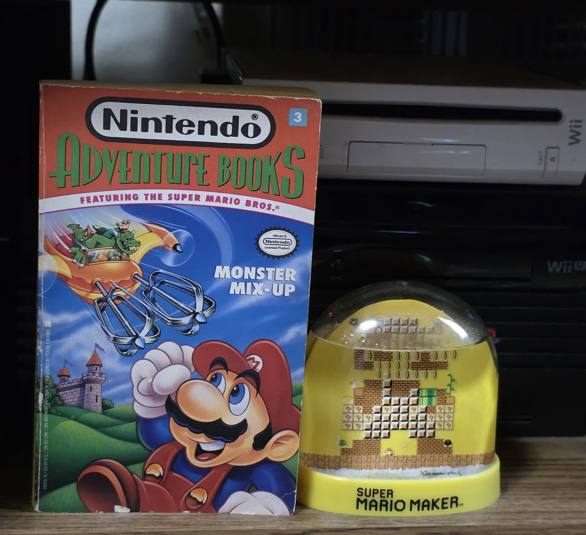
Intro: Now we delve into this book written by Bill McCoy published by Archway Paperback. After Mario and co go to a circus showing off freaks, they get split up by a suspicious photographer, and that just the beginning. This guide is adapted from a handwritten draft I completed on 4/20/19, using my own personal physical copy of this book. I will however link below a digital upload I found for those interested. Look at the key page on the portal for the terminology that will make up this walk through and all others.
The guide was created by Amia J. Moore/ C. Mechayoshi. It may not be copied without permission.
New: use side nav to jump around super quick. It is not meant to represent every page in the book.
Stats:
- Chapters: sixty-one
- Items: the hammer and gold pen
- Endings: eleven
- Maximum coins: infinite taking into account the reset option and/or natural looping nature of paths.
- Errors: One? See far bottom.
START Chapter 1, Page 1: Mario, Peach, Luigi, Toad, and the Mushroom King (frequently in comics but never in games) go to the Koopa and Kailey Circus. Mixed up monsters are present from the start and the clowns can’t really be trusted. A bright flash goes off and now several things are missing. Use the puzzle to navigate the first fork in the road.
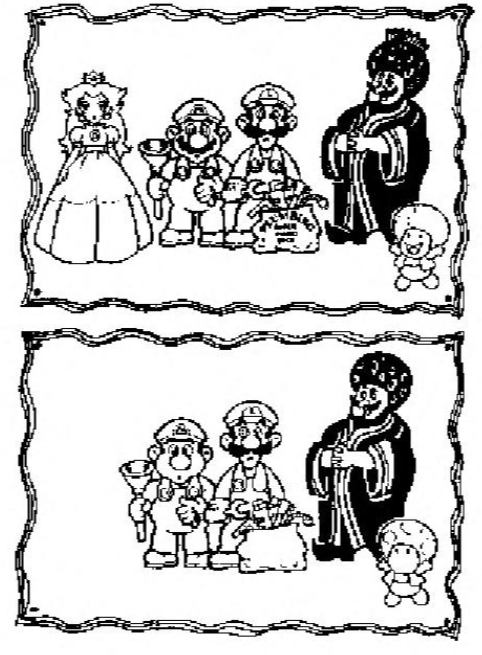
Splits: to page 84 (four things missing), page 108 (five things missing), page 116 (six things missing)
Path: from page 58 (reset option)
Puzzle solution: Six things are missing, Peach entirely, Mario’s moustache, Luigi’s button, the plumber logo, King’s crown, and Toad’s mouth. Go to page one hundred sixteen for the optimal path. The others paths are safe for now however.
Page 5 Chapter 2: Mario and Toad slide down a hill where there’s a few coins and the sound of the Monster Mixer. You are lead to forty-nine.
Reward: three coins
Split: to page 49
Path: from page 74, page 34
Puzzle solution: This leads to page forty-nine where one must be careful to get back on track; follow the puzzle solution on its entry. This path can add coins to the score without a complete reset if you can safely avoid the game over opportunities (or if you’ve memorized some of the page numbers by now).
Page 6 Chapter 3: Paths leading here involve wandering essentially though you are bumped into action. Mario must solve a puzzle while monsters close in. Coins are obtained.
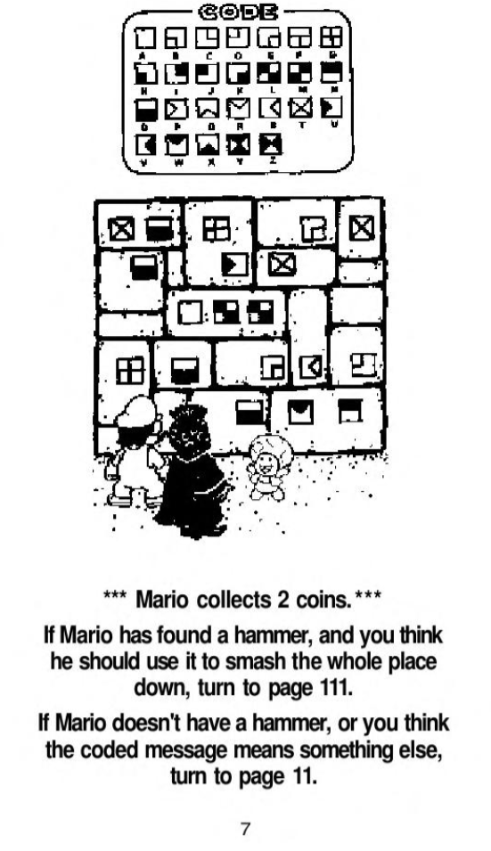
Rewards: two coins
Splits: page 111 (you have the hammer AND you wanna use it), page 11 (you DON’T have the hammer, and/or the message means something else)
Path: from page 36, page 17
Puzzle solution: Yet more tricks as when deciphered the puzzle states ‘To get out all goes down’, yet that’s a bad move with the hammer. It’s easy to not have the hammer at this point however but the setup will leave you wondering if you don’t know that the hammer is a trap item. Kinda mean.. Go to page eleven.
Page 8 Chapter 4: Mario is on the race for Luigi. They reach an army of mutants. Mario takes action but he’s accidentally juggling ‘goombombs’. Help him out with the puzzle!
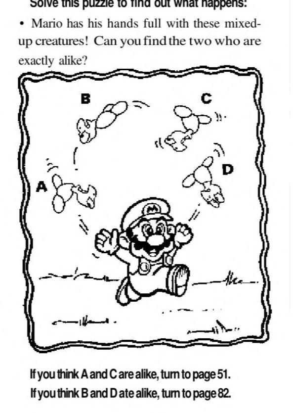
Splits: page 51 (A and C are alike), page 82 (B and D are alike)
Paths: from page 39
Puzzle solution: See which baddies match very easily. Go to page fifty-one. The other option is a loop back.
Page 10 Chapter 5: Mario is counting when the Soopa Paratroopa returns. This time it comes for them and they can’t escape.
Splits: page 26
Path: from page 23, page 68
Page 11 Chapter 6: Toad deciphers ‘all goes down’ but there’s a trick to it, smart guy! Only the block with the letter ‘All’ on it needs to be messed with. They escape the tunnel to catch sight of Bowser’s Monster Mixer. Now they must hide again.
Rewards: two coins
Splits: page 118 (stay in cave), page 71 (run for the tube)
Path: from page 6
Puzzle solution: Run for the tube on seventy-one to get out of this situation safely.
Page 14 Chapter 7: The ‘Big Top’ option. In the tent juggler Hammer brothers attack. Use the puzzle carefully.
Puzzle: 1, maze
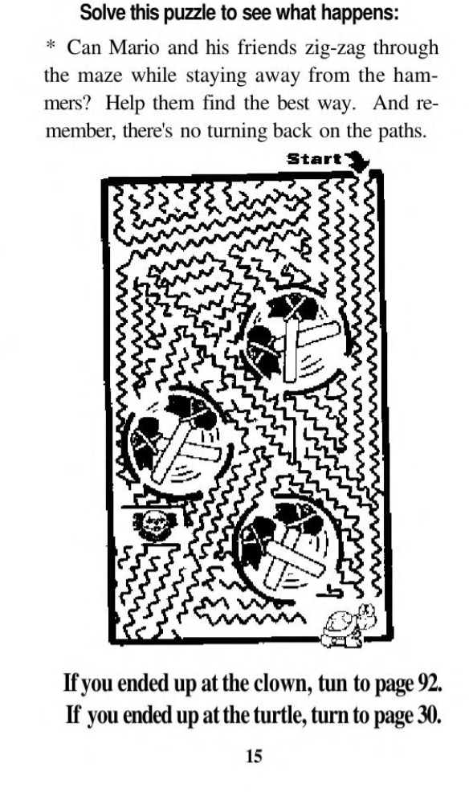
Path: from page 81
Puzzle solution: You want to land on the Koopa and not the clown. The only tricky part is that the instructions never tell you what to aim for.
Page 16 Chapter 8: Mario collects coins but then finds himself in the middle of nowhere all over again. Proceed to page one-hundred nineteen.
Rewards: three coins
Splits: page 119
Paths: from page 71, page 77
Page 17 Chapter 9: You get here from page thirty-six’s fork if you think Mario can fight. Kicking a creature reveals a puzzle involving changing panels. You have three options and one involves a hammer item you may not have unless you’ve looped or taken the option that allows so.
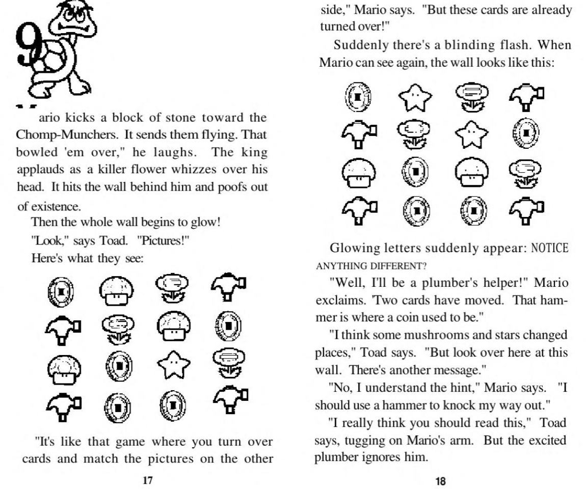
Splits: Page 111 (use hammer to smash out), page 30 (go through magic door bc you want the hammer), page 6 (look at what Toad’s talking about)
Path: from page 36
Puzzle solution: See what Toad is talking about on page six. Page thirty will send the player to get the hammer- except that’s useless!! If you have the hammer do NOT use it on page one-hundred eleven by the way.
Page 20 Chapter 10: After wandering Mario finds a vault but filled with lava!
Game over
Path: from page 112, page 97
Page 21 Chapter 11: Mario and Toad stowaway on the Soopa Paratroopa for a wild ride before reaching Bowser’s castle. Jump now or force the monster down.
Splits: page 41 (wait for jump), page 93 (force creature down)
Path: from page 80
Puzzle solution: Forcing it down will go horribly wrong so instead head to forty-one.
Page 23 Chapter 12: Mario and Toad tackle the tanks and dodge bullets. They take cover then Mario uses a shell to collect coins and destroy bad guys. 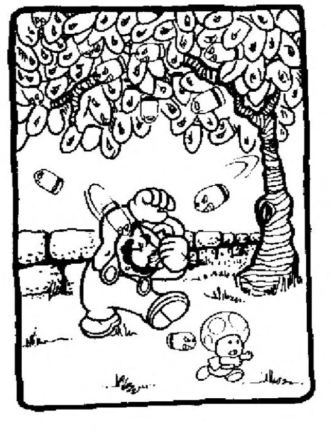
Reward: two coins
Splits: page 10 (you think there’s twelve), page 49 (you think there’s ten)
Path: from page 119
Puzzle solution: Count the bullets in the tree, and not the leaves that look suspiciously close. There are ten in the picture but it is tricky. Go to page forty-nine.
Page 26 Chapter 13: The Soopa Paratroopa captures Mario and Toad. Should they use tickling or sneezing to get the monster down?
Split: page 93 (tickle him), page 34 (make him sneeze)
Path: from page 10
Puzzle solution: Listen Toad’s idea on page thirty-four.
Page 28 Chapter 14: You get here from various situations involving the underground. Mario seems to be on the hunt for money but finds Chomp muncher hybrids, the subject of the puzzle.
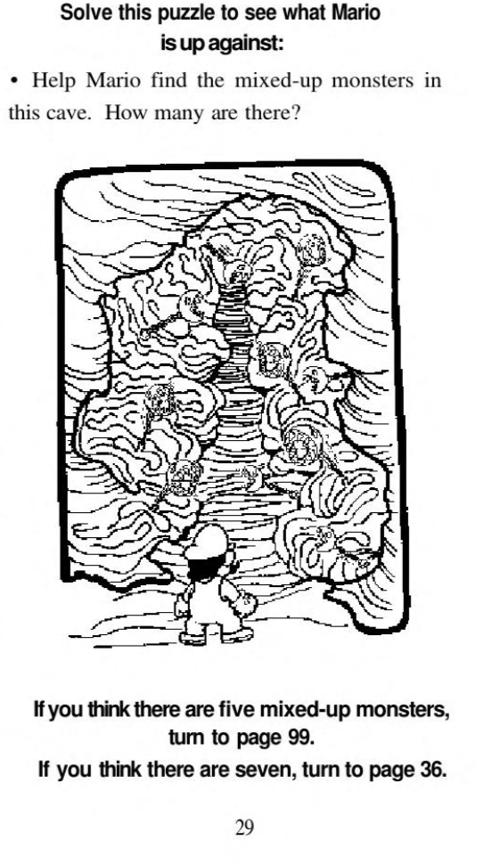
Splits: page 99 (five mixed-up monsters), page 36 (seven mixed-up monsters)
Paths: from page 94, page 39
Puzzle Solution: The reader is to distinguish the amount of mixed up monsters. Five of them are in a 3D perspective and five aren’t but its not clear which is correct to choose. Either way ‘five monsters’ or page ninety-nine is the right answer. Go there.
Page 30 Chapter 15: Mario beats the Hammer bros and gets the hammer item, though we will learn you may not always want to use it.. Go to page eighty-two.
Reward: two coins, hammer item
Splits: page 82
Paths: from page 14, page 17
Page 32 Chapter 16: Mario leaves coins behind and walks about to leave the cave just in time to see the Monster Mixer. The King gets himself info trouble and Mario must decide on what to do.
Splits: page 38 (fight Koopas), page 71 (escape)
Paths: from page 99
Puzzle solution: Go to seventy-one to keep moving. Thirty-eight kills.
Page 34 Chapter 17: Mario makes the monster sneeze, freeing them to land on a hilltop where Bowser’s castle is in sight. They must sneak past guards first, if they can..
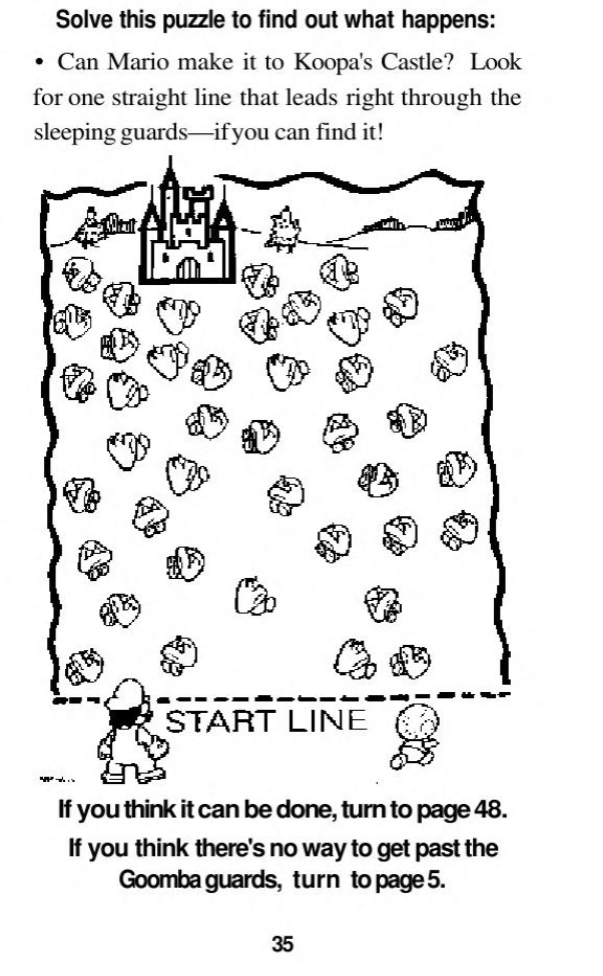
Splits: page 48 (it can be done), page 5 (it can’t)
Path: from page 26
Puzzle solution: You must draw a line to clear a path to the castle. It can be done so head to forty-eight. Page five is a loop back that leads to more money but no progress.
Page 36 Chapter 18: Starts with Mario saying “Seven!” which might make little sense depending on how you reach this page. Mario is in an underground room and they find monsters.
Rewards: two coins
Splits: page 17 (get rid of monsters), page 6 (find some other way out)
Paths: from page 64, page 61, page 28, page 82
Puzzle solution: Both paths just lead to more puzzles at this point, and this is off the optimal path so just explore for now.
Page 38 chapter 19: Mario tries to fight but is swarmed too much by the mixed up monsters
Game over
Path: from page 51, page 119, page 86
Page 39 Chapter 20: Mario chases Luigi. The Soopa Koopa shows but unlike other paths Luigi is with Lemmy! Toad stops Mario from chasing with a new point of interest, a wall of rock with a crack. That’s the split.
Splits: page 28 (check before they charge), page 8 (rush ahead)
Path: from page 101
Puzzle solution: Both paths just lead to more puzzles.
Page 41 Chapter 21: They go to the front door and find a complicated lock that Toad has thankfully heard of in the newspaper. Solve the puzzle by mentally rotating the image of Bowser.
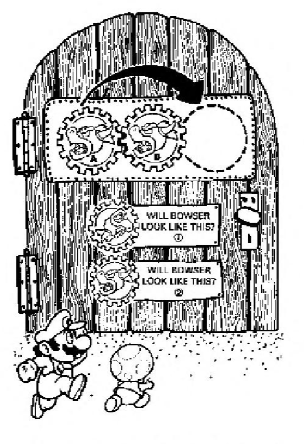
Splits: page 112 (choice one), page 44 (choice two)
Path: from page 103, page 95, page 21
Puzzle solution: Mentally rotate the gears. Bowser will look like choice two on page forty-four. Go there or get stuck in a bunch of loopbacks.
Page 44 Chapter 22: Mario solves the lock and for the first time they’re really in the castle. They sneak and find the cell of Peach and the King who is now mixed with a Koopa. That last part will either be a surprise or something previously witnessed depending on path chosen. Mario can rush to save Luigi or help the others first.
Rewards: six coins
Splits: page 55 (rush to Luigi’s rescue), page 97 (help others first)
Path: from page 41
Puzzle Solution: Both a safe options actually so just choose.
Page 46 Chapter 23: The starman, Mario, and Luigi mix in the bowl resulting in a super plumber that stomps Bowser’s army and the Koopalings along with the mixer. Bowser gets away so now the crew must find a way to unscramble everyone, off screen of course. You win.
Game over: (Win)
Reward: twenty coins
Path: from page 90
Page 48 Chapter 24: Mario and Toad tiptoe through sleeping guards. Mario pickpockets some coins then they must hide in either the bushes or rocks when they hear chanting.
Reward: three coins
Splits: Page 88 (head for rocks), page 103 (head for bushes)
Path: from page 34
Puzzle solutions: The rock option is a loop back path while the bushes will allow the player into the castle if prepared (for the upcoming puzzles and also with the needed pen item). Go to one-hundred three.
Page 49 Chapter 25: Mario loses count as they are ambushed. Mario defeats the enemies and collects a reward however the Soopa Paratroopa returns.
Rewards: one coin
Splits: page 76 (hit the dirt), page 119 (run!)
Path: from page 23
Puzzle solution: So this is a loopy section if you are not careful. The page seventy-six option is a game over as you see below this entry but the one-hundred nineteen leads to more looping if one isn’t careful. Make sure to go from pages one-hundred nineteen to twenty-three to ten to twenty-six to thirty-four. Thirty-four will be covered below.
Page 51 Chapter 26: While Mario is fighting, Koopas kidnap the king. Bowser himself explains that Iggy invented the Monster Mixer and that Lemmy was kidnapping people at the circus. This is the only spot in the book where this is mentioned. Either way Mario and Toad can make a move or stay put.
Reward: three coins
Splits: page 38 (save king), page 77 (stay put)
Path: from page 8
Puzzle solution: Page seventy-seven should be taken at this point.
Page 55 Chapter 27: The King leads the group on ‘high speed sneaking’. They find a trick lock involving tracing an image by the great Abstracto Tortunga using an easy to miss writing utensil. Where should you trace? Tip of the crown or bottom of the nose?
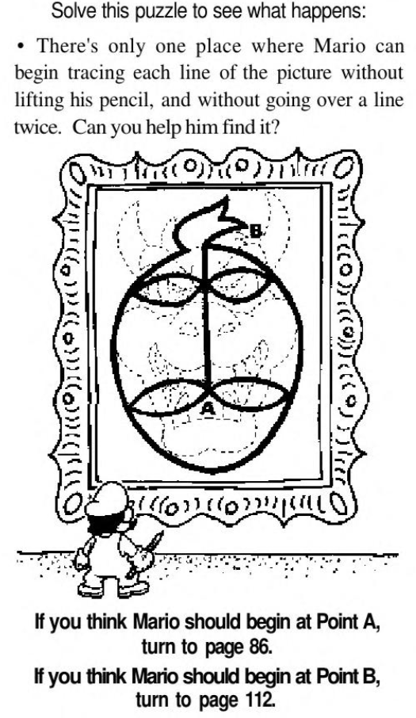
Splits: page 94 (need pen), page 86 (point A), page 112 (point B)
Path: from page 70, page 97
Puzzle solution: Mario starts at point A leading to eighty-six and the plot continuing. Page ninety-four is for if you have missed the gold fountain pen, so refer to its entry. Point B or page one-hundred twelve will send you back and waste time.
Page 58 Chapter 28: Mario intentionally resets the ‘game’. Something knocks him out and somehow time reset as everyone including Peach are back like nothing happened. If only Mario could warn them to just go home and avoid this mess. Instead go relive it all on page one… Or don’t take this path.
Splits: page 1
Path: from page 71
Puzzle solution: You keep your coins and items so go ahead and max out the score if you wish. The optimal path at the bottom of this guide will not reflect this exploit of course.
Page 59 Chapter 29: Mario and co head for the hills. They catch sight of a terrifying Soopa Koopa Paratroopa that will show up quite a lot in this book. Continue to sixty-four.
Splits: page 64
Path: from page 116
Page 61 Chapter 30: Mario plays 'pin the Koopa'. Use to puzzle to see where you land.
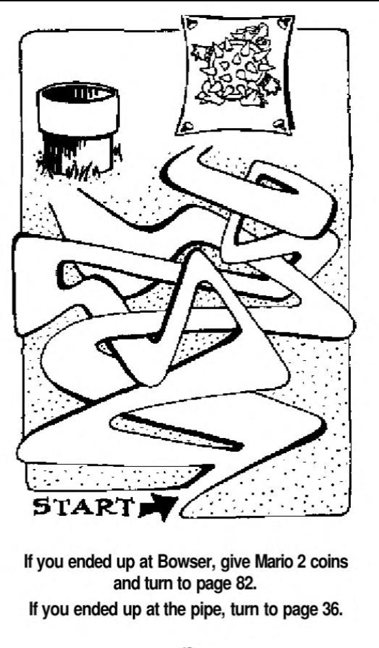
Splits: page 82 (end on Bowser), page 36 (end at pipe)
Path: from page 108, page 84
Puzzle solutions: Try to land on Bowser for coins which is thirty-six. No choices are ‘dangerous’ for now however.
Page 64 Chapter 31: The monster forces them to scramble. Mario tries to follow Luigi’s foot prints. That’s the puzzle.
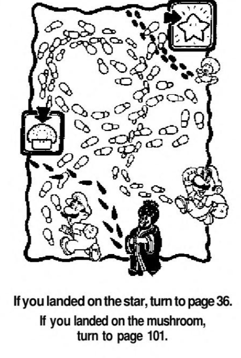
Splits: page 36 (end on star), page 101 (end on mushroom)
Path: from page 59
Puzzle solution: Luigi’s prints are bigger and lead to the star while Mario’s lead to the mushroom. Both paths can work but if following the optimal route (see the very bottom) you want to go to one-hundred one.
Page 66 Chapter 32: A game over involving the House of Horrors. In this continuity, Peach IS actually here but Mario can’t fight off the Koopas.
Game over
Path: page 116, page 108
Page 68 Chapter 33: Mario and Toad get lost in the clouds quickly. Use the puzzle to find where to go next.
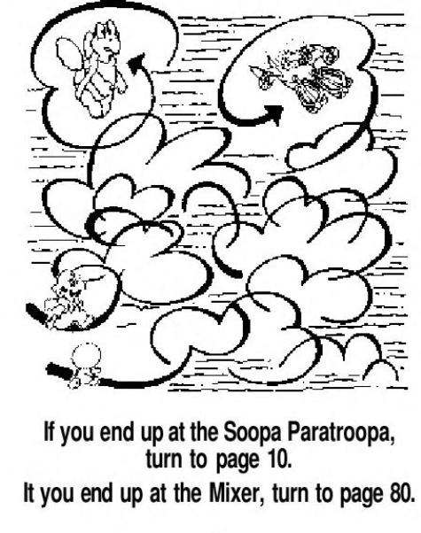
Splits: page 10 (Soopa Parakoopa), page 80 (mixer)
Path: from page 105
Puzzle solution: Toad’s path will lead to the mixer allowing a reward on page eighty. Page ten will get the characters captured so refer to page ten’s puzzle solution.
Page 70 Chapter 34: Mario wants to find Luigi but the King hybrid has a clue about how to get around the castle. Can Mario trust him?
Split: page 55 (trust the King), page 114 (don’t)
Path: from page 44
Path: Trust him and head to fifty-five, or else!
Page 71 Chapter 35: While fleeing the crew get separated and the King is mixed up with a koopa. This is unavoidable so don’t try to avoid this path because of that. Once again Mario and Toad are among stone walls but with two options, one very interesting..
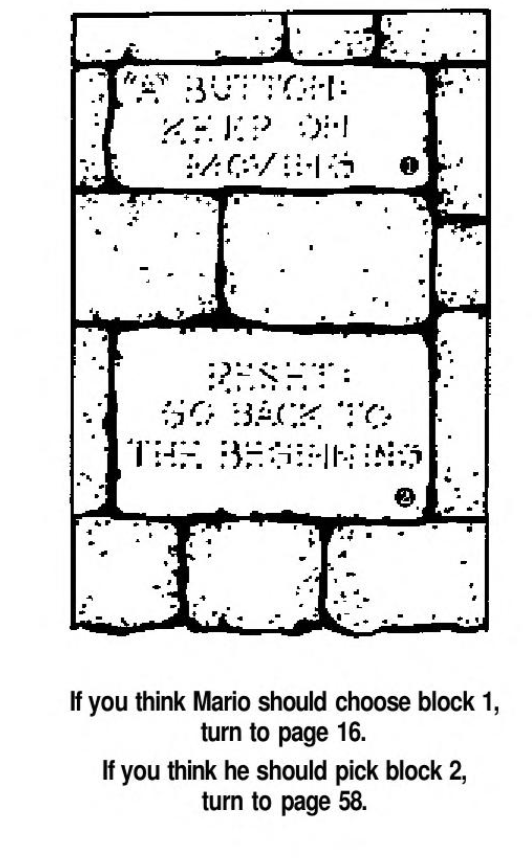
Splits: page 16 (block one), page 58 (block two)
Paths: from page 11
Puzzle Solution: A bit of a weird situation to be in as page sixteen will keep you trucking but also get you nowhere plot wise. Page fifty-eight will reset the entire book! You need the ‘shaggy dog’ sixteen route unless you really think starting from page one will help.
Page 74 Chapter 36: Mario and Toad are sent to the clouds when they spot the mixer. Mario is a little peeved he has lost his crew but anyway they must follow on ground or in the clouds.
Reward: four coins
Splits: page 105 (follow in clouds), page 5 (follow on ground)
Path: from page 77, page 112
Puzzle solution: Both just lead to more splits.
Page 76 Chapter 37: Mario and Toad roughly fling themselves down a slope to eventually get sat on by the monster.
Game over
Path: from page 49, page 105
Page 77 Chapter 38: Mario and Toad lay low to observe antics with Bowser and his army before bouncing. They find three pipes and three paths, destinations are hidden behind scrambled letters. 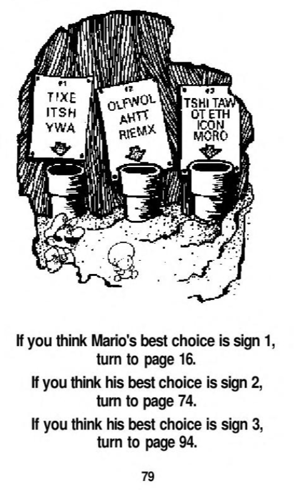
Puzzles: 1, decipher
Paths: from page 51
Puzzle solution: The first one is ‘exit this way’. Second: ‘follow that mixer’. Third: ‘wat this way to the coin room’ (error). The book is not explicit which is the right option but all lead to some money and the third path nets an opportunity for the gold pen item if it wasn’t acquired in an earlier path.
Page 80 Chapter 39: Mario and Toad find money and a way out of the clouds just in time to spot Bowser’s experiments and some exposition that Luigi and Peach are at the castle. Mario and hitch a ride on either the mixer or Soopa Paratroopa.
Reward: four coins
Splits: page 95 (stow away on mixer), page 21 (jump on Soopa Paratroopa)
Path: from page 68
Puzzle solution: Both lead to new events for a single page and branch back to to common paths. Just pick.
Page 82 Chapter 40: Mario and Toad end up in the middle of nowhere. Lemmy shows up and presses a button implying an explosion we don’t see. You go to thirty-six.
Splits: page 36
Paths: from page 61, page 30, page 8
Page 84 Chapter 41: You land here if you guess four missing things in page one’s puzzle. On this ‘bad’ path we see the photographer, a Goomba! We even get a hint that the clowns are actually Koopas. Why this exposition are on the ‘bad’ choice is a mystery. Either way you have a split with no puzzle at all for a hint.
Splits: Page 14 (go to big top), page 61 (follow tracks)
Path: from page 4
Puzzle solution: Page fourteen leads to the big top where it’s safe for the moment. Page sixty-one is 'pin the tail on the Koopa', also safe at the moment and awards coins.
Page 86 Chapter 42: Mario traces Bowser’s face with out lifting the pen, opening the way to Bowser’s throne room. Of course, it’s jammed packed with enemies and Luigi is being held hostage. Fight or wait?
Reward: Seven coins
Splits: page 38 (try to fight), page 90 (wait for better chance)
Path: from page 55
Puzzle solution: Do not fight them all. Wait for a better time on page ninety.
Page 88 Chapter 43: Mario and Toad hide in ‘rocks’ or prefab castle rejects. Toad finds a drain pipe that leads to a locked gate.
Splits: page 112
Path: from page 48
Puzzle solution: This is the start of a loop back. You cannot get into Bowser’s castle from this path but if you are here it’s not to late to rework so just keep going for now.
Page 90 Chapter 44: The Koopas seize everyone. Mario is joined with Luigi and a Koopa for an upcoming three way transformation. Quickly Mario tosses a Koopa shell at an item box containing a star. Use the puzzle and some math to aim.
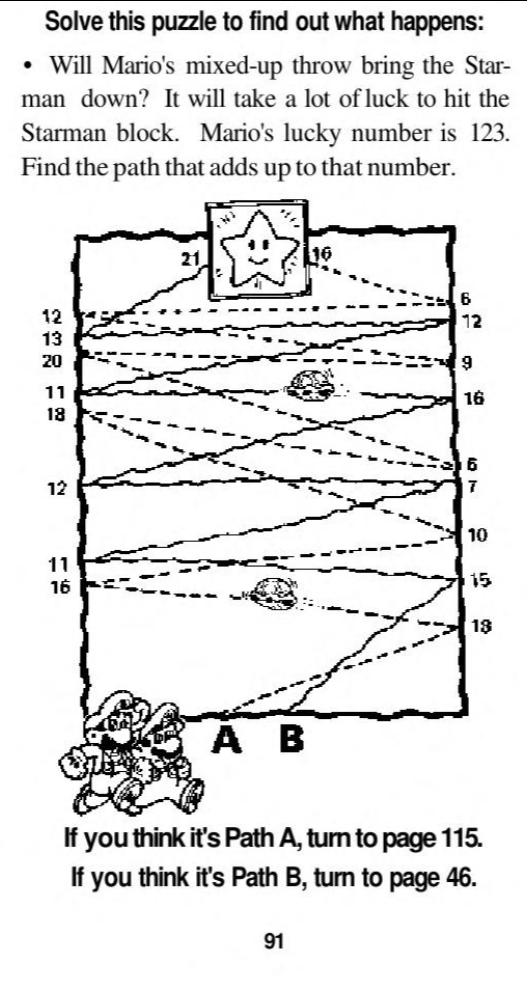
Splits: page 115 (path A), page 46 (path B)
Path: from page 86
Puzzle solution: Path B adds up to one-hundred twenty-three so go to page forty-six. You don’t want to get this wrong so close to the end.
Page 92 Chapter 45: A game over involving clowns that are more than meets the eye. And by that I mean actually Koopas.
Game over
Path: from page 14
Page 93 Chapter 46: Somehow the monster comes apart from not much, leaving Mario and Toad to plummet. This page has an illustration.
Game over
Path: from page 26, page 21, page 95
Page 94 Chapter 47: Mario gets excited over gold but really it just puts him underground. You move on to page twenty-eight.
Splits: page 28
Path: from page 77, page 55, page 101
Puzzle solution: Part of a route to get the gold pen.
Page 95 Chapter 48: Mario and Toad bravely cling to the mixer getting a great high up view of the Mushroom Kingdom and beyond. Soon they are spotted by a rocky wrench and have to jump now or fake them out.
Splits: Page 41 (jump now), page 93 (drop down and hang from bottom)
Path: from page 80
Puzzle solution: Jump now on forty-one. Ninety-three is bad news.
Page 97 Chapter 49: Mario is a team player so the majority rules and he helps them first. They sneak around and find a quick way out. Is it too good to be true or should Mario listen to the king?
Splits: page 20 (make a straight dash to exit), page 55 (follow the King)
Path: from page 44
Puzzle solution: Follow the King’s route. A straight dash out on twenty is a dead end.
Page 99 Chapter 50: Mario deduces five monsters. A switch he hits turns the monsters into coins and he finds a very nice (and very required) gold pen item. There’s a split next. Return to hero duties or get more money?
Reward: six coins, gold pen item
Splits: page 118 (go for more coins), page 32 (get back to work)
Path: from page 28
Puzzle solution: Don’t get greedy. Just start searching again on page thirty-two
Page 101 Chapter 51: You get here by choosing the Mario footprints path. Mario and co see the Soopa Paratroopa with Lemmy however it only dive bombs to scare them. Coins and a new area to explore is found.
Reward: three coins
Splits: page 94 (explore crevice), page 39 (chase brother)
Path: from page 64
Puzzle solution: Page ninety-four and thirty-nine can lead to the gold pen you need for late book as long as you get an upcoming puzzle correct.
Page 105 Chapter 53: Mario and Toad follow from the clouds in pursuit of the Monster Mixer before the Soopa Paratroopa shows up. They must hide on the ground or in clouds.
Splits: page 76 (hid on ground), page 68 (hide on clouds)
Path: from page 74
Puzzle solution: Don’t listen to Toad’s advice of hitting the ground. Go to sixty-eight.
Page 108 Chapter 54: Get here from page 4 if you ‘incorrectly’ guess five missing things in the puzzle. After seeing that Peach is gone, the clowns make everyone’s head spin for a moment, then they find a slit in the tent leading either to the Hall of horrors or ‘pin the tail on the koopa’.
Splits: page 66 (Hall or Horrors), page 61 (pin the tail on Koopa)
Path: from page 4
Puzzle solution: Notice we don’t have a puzzle like what page one-hundred sixteen gave us to know what to do. That’s actually an okay design choice to penalize the reader but still give them a chance. Head to sixty-one.
Page 103 Chapter 52: Mario and Toad hide in some chatty shrubs who give conflicting advice on how to get in the castle. There is a front door, a secret entrance, and ‘best’ of all zero clues!
Splits: page 41 (take front door), page 112 (secret entrance)
Path: from page 48
Puzzle solution: Here’s a hint: go to forty-one. Well that’s not a hint, I just told you the answer. Seriously though, you need to take the front door to get in.
Page 111 Chapter 55: Mario bangs on a load bearing wall with predictable results. Ouch.
Game over
Path: from page 17, page 6
Puzzle solution: Yes, a puzzle solution for a game over page because the hammer item is a red herring! It’s rather devious as page seventeen’s option to acquire it implies it’s important but no, you will not need it EVER.
Page 112 Chapter 56: Mario messes around with a gate leading to the castle’s plumbing. Stuck in another maze they must find an exit and there are no hints for the puzzle, mostly..
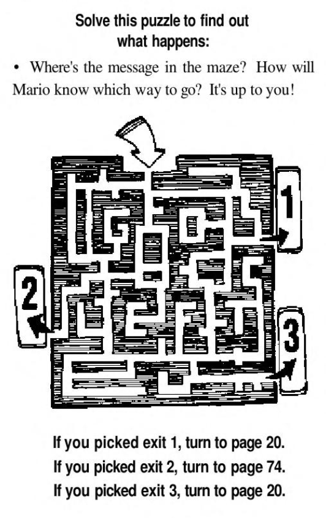
Splits: page 20 (exit one), page 74 (exit two), page 20 (exit 3, yes redundant)
Path: from page 88, page 103, page 41, page 55
Puzzle: The clue tells of what will send Mario back into the clouds and away from progress on page seventy-four. Take that route. Notice the paths leading here. You may see this page a lot if you get lost
Page 114 Chapter 57: Mario does not trust the King and normally for good reason, except in this case where he misleads everyone into a Thwomp room to get, well, thwomped!
Game over
Path: from page 70
Page 115 Chapter 58: Mario misses causing a chain reaction that makes the Monster Mixer explode, of course on Mario. It’s game over.
Game over
Path: From page 90
Page 116 Chapter 59: The team find Peach’s crown on the ground with a point bent in a particular direction, either the House of Horrors or the hill top. 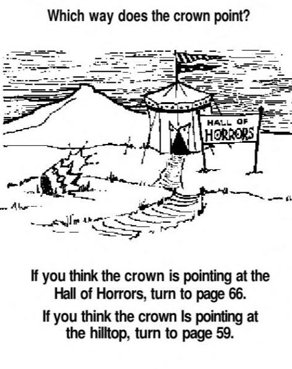
Splits: page 66 (Hall or Horrors), page 59 (hilltop)
Path: from page 1
Puzzle solution: The correct choice is the hilltop on fifty-nine.
Page 118 Chapter 60: In the cave the crew succumb to the Chomp-munchers due to Mario’s over confidence.
Game over
Paths: from page 11, page 99
Page 119 Chapter 61: Mario and Toad run from enemies handicapped by their own zany transformations. They aren’t much of a threat, or are they?
Splits: Page 38 (trash the Koopas), page 23 (take on tanks)
Paths: from page 16, page 49
Puzzle solution: Don’t fight. Approach the tank force on twenty-three.
Summary and conclusions:
The path to the end is quite linear after all is it not? Forks eventually join to common paths or just endlessly loop. Key points involve getting to Bowser’s front door, the only way in, and having the pen though the book does mercifully offer a chance to get it. (Not all Nintendo Adventure Books will be so kind.) Once in the castle, the Mushroom King must be listened to or else. The math puzzle on page ninety is easy for the last puzzle but also offers no second chances.
Of the three Nintendo Adventure Books I acquired as a kid, this was my least favorite. Now however, I can recognize that the writing quality is decent and I like how its more about movement than collecting items for checks. Toad and occasionally the Mushroom King are okay sidekicks but Luigi is sadly captured during this book. The settings are indistinctly outdoorsy, to the point where enemy encounters are your landmarks if you’ve repeated pages over an over. It’s too open in the middle and full of ‘shaggy dog’ paths and the puzzles don’t do their job of guiding you well. The last leg is linear in nature and after the whole ordeal you might find that welcome. Coins are scattered about in the book and in very low and odd amounts. It’s a mild complaint, but it’s more annoying to keep up with that way. I do not appreciate how one of the only two items is an ‘item of doom’, but it gets points back for the required item being easy to obtain and the book giving second chances if you missed it. I give it a generous 3/5, only because of some moments with the mixed up baddies and nostalgia as a confused kid trying to get through this book.
Optimal Path:
START Page 1- 116 - 59- 64 – 101 (three coins) – 39 – 28 – 99 (six coins) – 32 – 71- 16 (three coins) – 119 – 23 (two coins) – 10 – 26 – 34 – 46 (three coins) – 103 – 41 – 44 (six coins) – 70 – 55 – 86 (seven coins) – 90 – 46 (twenty coins) END
This awards fifty coins for five-hundred points, “Power Plunger”. The highest “Rompin’ Stompin’ Wrenchmater Supreme” rating requires six-hundred ten or more, so they expect you to wander around and repeat pages. You can reset the whole book and keep your coins so the total coins is really as infinite as you have the patience for that. I don't!
Errors: A couple of puzzles have some baffling moments but officially the only major error I’ll count is page sixty-four’s footstep puzzle. To get on the path for the gold pen you must get it incorrect and choose Mario’s path. Page sixty-eight’s puzzle shows a picture of Luigi in place of Mario. Page seventy-seven’s puzzle two pages later has one of the pipes messed up.
Key Locations:
- Hammer: page 30
- Gold pen: page 99
Puzzle analysis: There are six ‘spot the difference’, two ‘get a straight edge’, four ‘maze’, two ‘decipher’, two ‘logic’, one ‘math’ and one ‘other’ puzzle coupled with a decipher puzzle. The ‘other’ attribute is because that is a hard reset page. Lets talk the puzzles in this book: on the simple side overall but the issue is that they don’t always lead to good things and with no warning. Sometimes you are expected to just guess or perhaps it would be better if only the instructions clarified a fact or two.
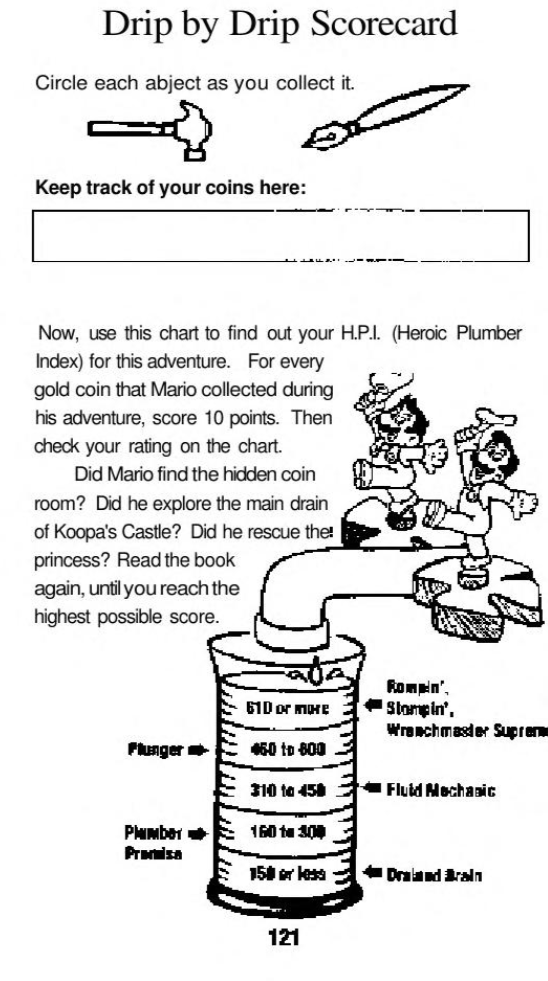
Book goals:
-Did Mario find the hidden coin room: Had to think on this one. I think they mean what leads to the gold pen which would make sense as there aren’t any points other than the ending that dumps coins on you.
-Explore the main drain of Koopa’s castle: Not sure why they recommend that assuming they mean page one-hundred twelve. That’s a loopy section that can either kill you or just send you in circles. There’s a reason the optimal path avoids it.
-Does he rescue the princess: Again strange, as that’s not optional or anything. Mario finds her the moment he and Toad gets in on page forty-four. I almost think they mean Luigi since you do have the choice in the book to go for him solo. Whatever!
Last edit: 2/20/20 , 11/13/20, 11/14/21, 12/20/23
Redone: 9/29/26
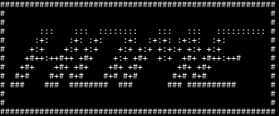